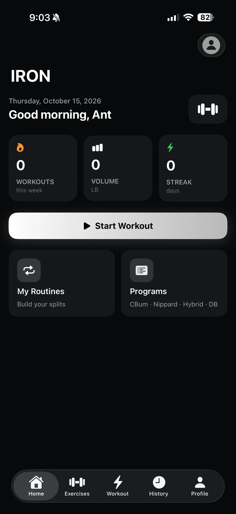
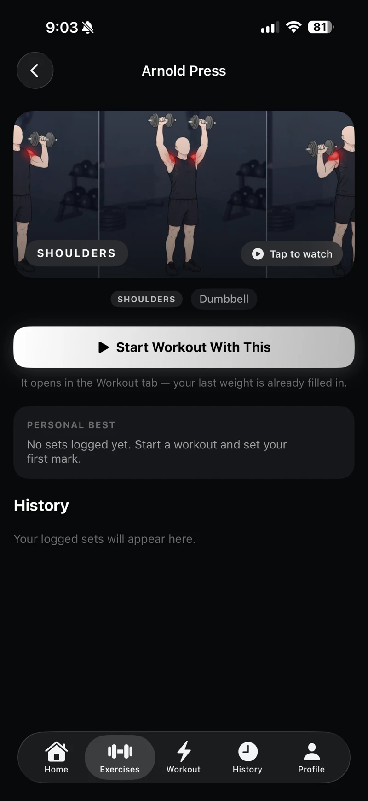

ANT STREAMS / MULTIPLATFORM


Ant Streams↗
One streaming project. Three experiences. Native SwiftUI apps and a browser player, connected through shared account and provider services.
Explore the engineering ↗PROJECT INDEX
Explore application development, infrastructure engineering, and the learning that connects them.
One streaming project. Three experiences. Native SwiftUI apps and a browser player, connected through shared account and provider services.
Explore the engineering ↗

Exercise discovery, training programs, and a focused iPhone experience. The companion web prototype explores custom routines and locally saved workout sessions.
Explore the product ↗A Raspberry Pi homelab for Linux, Docker, private remote access, storage, automation, and video workflows.
Inside the homelab ↗Building Python foundations and exploring machine learning, AI agents, and automation. A learning lab with room to grow.
Follow the AI journey ↗